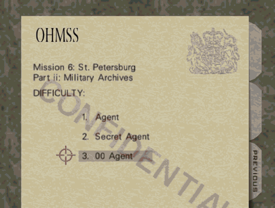
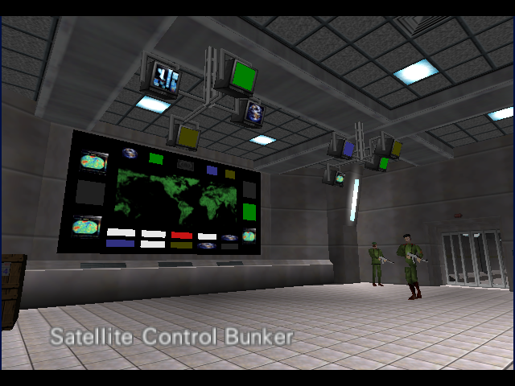
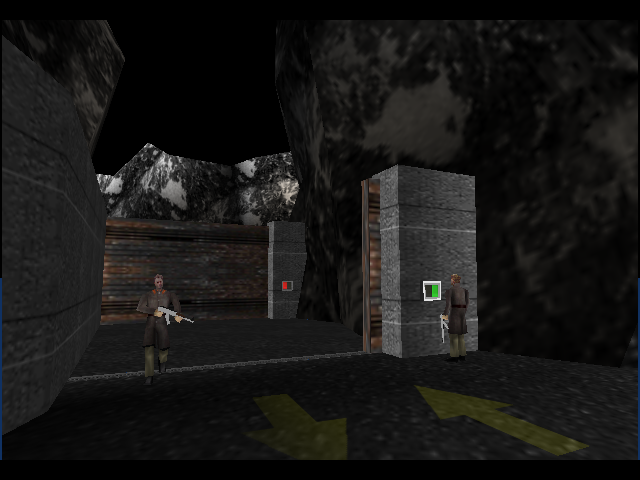

Preservar primeiro
O comportamento original continua sendo referência. Melhorias modernas devem ser opcionais quando alterarem a experiência.
GOLDENEYE 007 • PC • PROJETO ABERTO
Ascension preserva o GoldenEye original e constrói uma experiência de PC mais moderna, documentada e acessível — sem esconder a história técnica que tornou tudo possível.

01 / VISÃO
Queremos uma base que uma pessoa consiga entender, modificar, testar e melhorar sem depender de conhecimento secreto.
O comportamento original continua sendo referência. Melhorias modernas devem ser opcionais quando alterarem a experiência.
Commits pequenos, origem documentada e diferença clara entre “compilou” e “foi testado jogando”.
O código não deveria ser compreensível apenas por quem já trabalha nele há anos.
02 / EM EXECUÇÃO


Capturas e demonstração do motor do projeto. O desenvolvimento ainda está em andamento e defeitos conhecidos continuam sendo investigados.
03 / PRIMEIROS PASSOS
No Windows, abra o terminal MINGW64 e instale as dependências descritas no README.
git clone https://github.com/MukaSanches/goldeneye-pc-port.git
cd goldeneye-pc-port./build-pc.sh ntsc-finalAbra o jogo, entre em uma missão e valide exatamente a área que você modificou.
04 / ROADMAP
Build reproduzível, execução no PC e preservação do comportamento clássico.
Arquitetura multilíngue e experiência PT-BR de qualidade.
Presets modernos, remapeamento, sensibilidade e suporte melhor a controles.
Configurações, apresentação, acessibilidade e qualidade de vida.
Ferramentas e interfaces para permitir que a comunidade construa sobre a base.
05 / CONTRIBUA
Crie uma branch. Mude pouco. Compile. Teste. Confira o diff. Faça commit. Esse ciclo simples permite que iniciantes aprendam e especialistas revisem.
git switch main
git pull
git switch -c melhoria/minha-ideia
# altere → compile → teste
git status
git diff